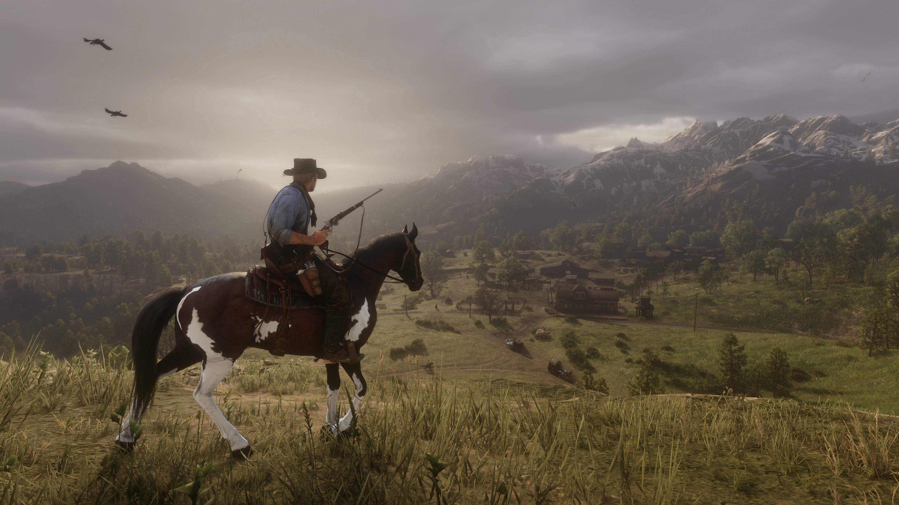

Aqui estão recomendações de algumas da minhas mídias favoritas
Séries favoritas
Dando o pontapé inicial, primeiramente gostaria de falar sobre algumas séries. Um ponto determinante que acaba sendo intrínseco para um bom proveito delas é a duração, portanto nessa seção você encontrará recomendações de séries que já terminaram e/ou têm uma duração curta de episódios.
- Mr. Robot (2015 - 2019)
- The Sopranos (1999 - 2007)
- Peaky Blinders (2013 - 2022)
- Fleabag (2016 - 2019)
- Breaking Bad (2008 - 2013)
Essa é uma série que carrego no coração, recomendo para pessoas de todas as idades, mas principalmente os que gostam de tecnologia.Transtorno dissociativo de identidade, depressão, fobia social e suicídio são apenas alguns dos temas abordados pela série. A narrativa em todas as temporadas é alto nível, todos os momentos, todos os acontecimentos têm algum significado e não desperdiçam o tempo do telespectador. A evolução dos personagens na série é fenomenal, com atores que conseguem entregar inocência na primeira temporada entregarem choros de desespero na última temporada. Mr. Robot é uma série que aborda teorias da conspiração, críticas à sociedade atual e à corporações gigantescas, questiona a forma que as pessoas vivem, religião e até mesmo a tecnologia. “The concept of waiting bewilders me. There are always deadlines. There are always ticking clocks. That is why you must manage your time.” ― Mr. Robot
A série está disponível no serviço de Streaming Amazon Prime, possui 4 temporadas
Sendo elogiada por muitos, The Sopranos é uma série antiga da HBO mas que contém uma qualidade indiscutível. Desde sua narrativa, figurino e personagens. A série acompanha o cotidiano da família Soprano, tendo como líder Tony Soprano, um mafioso ítalo-americano em Nova Jersey. Tony têm dificuldades de conciliar e conduzir seu ramo de trabalho violento ao mesmo tempo que tenta ser um bom pai e marido. Ao longo dos episódios, Tony descobre que tem ataques de pânico e começa a se tratar com uma psiquiatra, porém com seu estilo de vida conturbado, ninguém pode saber do fato. Tony é um personagem extremamente interessante, pois é como um anti-herói, ele faz coisas hediondas com sua família e "inimigos",porém os telespectadores tem conhecimento de suas fraquezas e motivos, o que faz com que seja mais fácil ter empatia por Tony.
A série está disponível no serviço de Streaming Hbo Max e possui 6 temporadas
Mais uma série de crime porém essa trata de mafiosos ingleses. A narrativa acompanha Thomas Shelby(Cillian Murphy), um gângster que faz de tudo para que seu negócio de apostas e crimes ilegais evolua e cresça. Armas, apostas, policiais, juízes e governo. Tudo pode ser controlado pela família Shelby e a série demonstra isso. Thomas é um personagem intrínseco à todos os acontecimentos, tudo em sua vida acontece quando ele dita e trata todos à sua volta como uma lista de afazeres e negócios a seres discutidos, até mesmo os próprios irmãos, o que torna gostar do personagem um pouco difícil no início. Porém com o desenrolar dos episódios, Thomas mostra seu lado sensível e vulnerável, seu amor pela sua família é inegável por mais que ele não demonstre.
A série é recheda de boas histórias e personagens, com uma menção honrosa ao irmão de Thomas, Arthur Shelby(interpretado por Paul Anderson), que possui um arco narrativo assombroso. O ator consegue entregar todas as emoções com maestria e o telespectador consegue sentir a raiva e descontrole do personagem.
Disponível para assistir no serviço de Streaming Netflix e possui 6 temporadas

Quando comecei a assistir Fleabag não esperava nada, felizmente essa série entregou tudo e um pouco mais. Com quebras constantes de quarta parede (quando o protagonista fala com o telespectador/leitor), Fleabag conta a história de uma protagonista sem nome interpretada pela atriz Phoebe Waller-Bridge.A série aborda como ela lida com seus problemas de relacionamento, frustração sexual e profissional do ponto de vista feminino. Além disso, a personagem é uma mulher sexualmente compulsiva que nunca conseguiu lidar com suas perdas e compensa tudo isso através do sexo, humor ácido, bebida e comportamentos destrutivos.
De forma geral, a série é excelente e a atriz consegue transmitir as emoções com maestria, em certos momentos podendo ser considerada a própria "vilã" da trama.
Disponível para assistir no serviço de Streaming Amazon Prime e possui 2 temporadas
Breaking Bad foi outra surpresa, tinha assistido apenas uma série até então que foi The Walking Dead, no entanto não tinha me agradado o tanto quanto queria. Quando me deparei com Breaking Bad por recomendação foi um choque, nunca tinha visto um episódio piloto tão bom. Como é a primeira impressão é a que fica, acabei "devorando" rapidamente todo o conteúdo da série.
Acredito que essa série dispense apresentações, é uma das mais famosas do mundo, vencendo diversos prêmios e tudo mais. Em síntese, Walter White que é um professor de química se encotra em um situação complicada e recebe o resultado de câncer de pulmão. Desesperado e recentemente realizado que nunca tinha feito "nada de importante" em sua vida, ele procura um ex-aluno para começar a produzir e vender metanfetamina como uma forma de garantir um "futuro" para sua família.
Disponível para assistir no serviço de Streaming Netflix e possui 5 temporadas
Jogos favoritos
A minha paixão por essa mídia interativa não é de hoje, desde minha infância que jogo videogame. Nessa seção irei discorrer um pouco sobre esse hobby que tem cada vez mais evoluído de forma exponencial.
Deixando um adendo que possuo um notebook modesto e um Xbox, então as recomendações estarão de acordo com o que joguei, o que infelizmente exclusivos da Sony ficarão de fora. Porém reconheço que muitos deles são obras-primas dignas até mesmo de adaptação televisiva, como foi o caso de The Last Of Us.Se o seu jogo favorito não está aqui, sem problemas, não significa que é ruim e cada um têm direito à sua opinião, esse portal é apenas para recomendação de algumas mídias que consumo.
- Elden Ring (2022)
- Cyberpunk 2077 (2020)
- Bioshock Infinite (2013)
- Red Dead Redemption 2 (2018)
- Gran Turismo 4 (2004)
- Life is Strange 1 e Before the Storm (2015 - 2017)
- Série de jogos Batman Arkham (2009 - 2015)
- Far Cry 3 (2012)
- Devil May Cry 5 (2019)
- Doom Eternal (2020)
Jogo do ano em 2022 e dispensa apresentações. Esse é o meu favorito da série da From Software, entretanto nessa posição estou englobando todos da série Souls. Cheguei um pouco atrasado, apenas em 2017 começando com Dark Souls 1 mas já me apaixonei de primeira. O que me cativa nesses jogos é a ambientação que não é como nenhum outro game, o combate é muito bom, a lore é curiosa e a música sublime. Elden Ring têm a melhor exploração de jogos de mundo aberto que já vi em 20 anos, o jogador vai até o local no mapa realmente para explorar e não para checar uma caixa em um menu, como nos jogos da Ubisoft. Enfim, Elden Ring foi o magnum opus do time de Hidetaka Miyazaki.
O maior barulho no mundo dos jogos em tempos recentes. Até quem não gosta de videogame ficou sabendo do fiasco que foi o lançamento de Cyberpunk 2077. CD Project Red prometeu tudo e não entregou nada. No entanto, joguei o game recentemente e posso afirmar, o jogo está melhor. Nunca será o prometido pela CD mas ainda sim um dos melhores que já joguei. Cyberpunk é uma experiência diferente para todos, para os quem tem consoles de geração passada não chega nem perto do que pode se tornar a experiência em um computador "parrudo" de útima geração. Joguei em um Xbox Series S e apesar do jogo não ter opção de fov slider, ainda sim tive uma experiência extremamente positiva.
O mundo que a CD Project Red contruiu é magnífico, as ruas, os prédios, os banners. Tudo de forma bem detalhada, os sons das pessoas andando nas ruas, músicas, tiroteios em becos, bares, lojas de aprimoramento cibernético, a cidade parece viva de uma maneira que não consigo explicar.
A história é outro aspecto forte do jogo, muitos considerando o real motivo de terem comprado o game. Os relacionamentos que se desenvolvem com o decorrer da trama são surpreendentes. Além disso, a performance de Keanu Reevesé de cair o queijo.Keanu parecia super a vontade na captura de movimentos pois sua interpretação do personagem Johnny Silverhand combinou perfeitamente. Disparado meu personagem favorito do jogo.
Eu sou um grande fã desse estilo de arte e construção de mundo, então leve esses elogios com cautela. Se você não gosta desse tema e possui um hardware mais modesto, tente conter suas expectativas caso escolha comprar esse game.
O jogo que mudou minha concepção de mundo. Parece exagero, mas esse foi o primeiro game que realmente me interessei pela história em 2013. A franquia Bioshock como um todo é antro de boas histórias.
Infinite combina fanatismo religioso, viagem no tempo e super-poderes, algo que na minha opinião, é perfeito. Booker Dewitt visita Columbia através do mesmo farol misterioso do primeiro game, no entanto ele não viaja a Rapture, a cidade enterrada no oceano mas sim à uma nova cidade steapunk localizada nas nuvens. Lá ele tem uma missão de resgatar Elizabeth, uma mulher com poderes de voltar no tempo e a partir dali a narrativa se desenrola.
O gameplay é sólido apesar dos fãs mais saudosistas da séries não terem curtido uma pegada mais de ação do título. É necessário combinar o uso de Vigores, que são uma espécie de poderes, com o uso de armas alá Primeira Guerra Mundial para enfrentar e derrotar os inimigos. O pace do game é bom, não tendo excesso de história ou gunplay o tempo todo.
Recomendo para todos que gostam de jogos primeira pessoa e uma boa história. Prepare-se para um final totalmente inesperado.
Conhecido por muitos, Red Dead Redemption 2 ficou conhecido pelas suas mecânicas exuberantes e animações extremamente detalhistas. A história se passa no ano de 1899 em uma representação fictícia do velho oeste e sul dos Estados Unidos e acompanha o protagonista fora da lei Arthur Morgan que precisa lidar com o declínio do Velho Oeste e o fim da era dos "cowboys foras da lei".
O jogo recebeu críticas positivas do público e especialistas e é considerado por muitos um dos melhores jogos da oitava geração de consoles. Arthur Morgan é um protagonista de peso para a trama, tendo um arco narrativo espetacular e personalidade altamente "gostável". Arrisco dizer que Arthur foi o protagonista mais bem escrito pela Rockstar Games.
Se deseja ter uma experiência diferente de qualquer outra e gosta de animações detalhadas, recomendo a compra.
Alguns dizem que esse foi o pico que essa franquia atingiu. Lançado na época do PlayStation 2, Gran Turismo 4 é o jogo da infância ou da vida adulta de fanáticos por automobilismo. O game conta com mais de 700 carros e 80 fabricantes, um número assutadoramente alto para a época. Infelizmente quantidade não é qualidade, entretanto a experiência não é tão prejudicada pelos sons de motores que parecem um "aspirador de pó".
O jogador vai passar a maior parte do tempo em seu modo principal Gran Turismo Mode.É como um modo companha que é cedido um valor monetário inicial para se comprar qualquer carro usado e começar sua carreira de piloto, não se esquecendo que para progredir, deve-se tirar a Carteira de Motorista fictícia do jogo.
A campanha possui uma variedade imensa de eventos e recompensas bastante satisfatórias, tendo até mesmo corridas de 24 horas de duração, as famosas corridas de resistência em que os jogadores de Forza Motorsport tanto desejam.
Gran Turismo 4 se auto intitula The Real Driving Simulator, entretanto é um sim-cade em que jogadores mais inexperientes conseguem jogar normalmente se ativar as assistências e os pilotos mais avançados conseguem sentir bem as reações do carro desativando as mesmas.
Se você for fã de automobilismo e ainda não jogou, tá perdendo tempo, os gráficos são muito bons até hoje. O jogo passa uma sensação muito boa de participar desse mundo competitivo das corridas.
Menções Honrosas
Há inúmeros outros, no entanto não faria sentido ficar recomendando vários outros aqui.